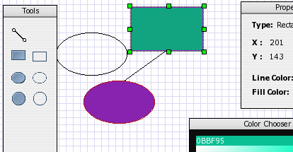

Open-jACOB Draw2D - Ajax Diagrams that just worksCreate drawings and diagrams with the free Javascript library. The User interface allows interactive drawing by using your standard browser. No additional software; no third party plug ins. Just run it and use it.....the Draw2D SDK is one of our main targets at the moment. Weekly updates available! [Download] (version 0.9.10) [JavaScript Documentation] |
 |
About
Draw2D is the graph component of the Open-jACOB web based workflow editor. The purpose of this experiment is to see if a Visio-type workflow editor tool could be developed in a web browser. It demonstrates that it can be done.Note: There is no Ajax writeback to the server in the demos.
New Subproject started: The 'Shape Library'
All developers are welcome to post common usable shapes to the forum. I collect and integrate them into the common build process of the draw2d library. See ./draw2d/shape/uml/Class.js for a UML Class Figure example.Note: Your license must be LGPL.
Examples created with Open-jACOB Draw2D
Two versions available. The single file include for your final application (fast loading) and the modules version for debugging and development.- Non Interactive Demo [modules] [single file include]
- Interactive Demo [modules] [single file include]
- Selection Notification [modules] [single file include]
- Extended Selection Listener [modules] [single file include]
- Double Click Event Handling [modules] [single file include]
- Timer [modules] [single file include]
- Scroll to Object [modules] [single file include]
- Port adjustment during object resize [modules] [single file include]
- Resizeable Image Figure [modules] [single file include]
- Simple Vector Drawn Figure [modules] [single file include]
- ArrowLine [modules] [single file include]
- Hover Effect [modules] [single file include]
- Simple-Connector [modules] [single file include]
- Z-Connector [modules] [single file include]
- Arrow-Connector [modules] [single file include]
- Adding a label to a Connector [modules] [single file include]
- Custom port UI representation [modules] [single file include]
- XML export [modules] [single file include]
- Simple UI designer [modules] [single file include]
- Simple VectorPaint [modules] [single file include]
- Object ContextMenu [modules] [single file include]
- Canvas ContextMenu [modules] [single file include]
- ToggleButton [modules] [single file include]
- Simple Tooltip [modules] [single file include]
- SnapToGrid [modules] [single file include]
- SnapToGeometry [modules] [single file include]
- Context menu for Connections[modules] [single file include]
- Double click event handler for Connections [modules] [single file include]
- Different Connection Router[modules] [single file include]
- Arrow Connection Decorator[modules] [single file include]
- Figure FlowMenu[modules] [single file include]
- Yahoo UI Integration (COOL and NEW)[modules] [single file include]
- Position of the Canvas other than [0,0][modules] [single file include]
- Collapseable/Expandable Figure with Round Corners[modules] [single file include]
- Digital Circuit Simulator[external jACOB application]
- Basic UML Diagram[modules] [single file include]
Changelog
Draw2D 0.9.10 released [22-11-2007] [Download]
Feature added: Color.darker(/*:float*/ ratio).Feature added: Color.brighter(/*:float*/ ratio).
Bug fixed: Wrong cursors for the ResizeHandles.
Draw2D 0.9.9 released [19-11-2007] [Download]
Feature added: CompartmentFigure now a subclass of Node. You can now add Ports to the CompartmentFigure.Draw2D 0.9.8 released [19-11-2007] [Download]
Feature added: Adding ConnectionAnchor, ChopboxConnectionAnchor helper classes for Connection endpoint manipulation.Feature added: New Demo for ConnectionAnchor demo.
Feature added: Starting a new subproject for common used figures. A Shape Library.
Draw2D 0.9.7 released [15-11-2007] [Download]
Feature added: Adding Locator, ConnectionLocator, ManhattenMidpointLocator helper classes for adding labels to a Connection figure.Feature added: New Demo for labeling a connection.
Draw2D 0.9.6 released [22-09-2007] [Download]
Feature added: Adding Workflow.showTooltip(..)Feature added: New Demo for tooltip handling
Draw2D 0.9.5 released [20-09-2007] [Download]
Bug fixed: Wrong Figure.onMouseEnter Figure.onMouseLeave Event Handling.Feature added: Adding onMouseEnter onMouseLeave Demo
Draw2D 0.9.4 released [20-09-2007] [Download]
Bug fixed: Connection was dragable. This make no sense.Draw2D 0.9.3 released [14-09-2007] [Download]
Feature added: Lines (not Connections) now dragableDraw2D 0.9.2 released [22-08-2007] [Download]
Feature added: New example Round Corner FigureFeature added: New example Digital Circuit Simulation
Bug fixed: Remove some bugs related to the namespace migration of the library
Bug fixed: Replacement of the class Image with ImageFigure (depends on some IE problems)
Draw2D 0.9.0 released [08-08-2007] [Download]
Feature added: Adding new method Workflow.setViewPort() [demo]Feature added: Adding namespace support for all Draw2D classes (see in the download zip archiv)
Feature added: Yahoo UI integration [demo]
Feature added: Refactoring the Draw2D core. Reason: Be compatible with prototype, jQuery,....
Draw2D 0.8.9 released [2-08-2007] [Download]
Feature added: New method Workflow.setEnableSmoothFigureHandling(/*:boolean*/ flag).Feature added: Change Demo FlowMenu to demonstrate the setEnableSmoothFigureHandling(...) method.
Draw2D 0.8.8 released [1-08-2007] [Download]
Feature added: New methods Workflow.moveFront(/*:Figure*/figure) and Workflow.moveBack(/*:Figure*/figure).Feature added: New Demo FlowMenu to demonstrate the moveBack(..) and moveFront(..) method.
Draw2D 0.8.7 released [31-07-2007] [Download]
Feature added: New missing method Document.getLines.Feature added: Extended selection listener demo.
Draw2D 0.8.6 released [30-07-2007] [Download]
Feature added: Update ConnectorDecoration exampleFeature added: VectorFigure now a subclass of Node. So - the class can have ports too.
Feature added: Performance improvement during DragDrop of objects.
Feature added: Adding new method Annotation.setStyledText(/*:String*/ htmlText).
Feature added: Adding new method Port.setHiddenIfConnected(/*:boolean*/ flag) (only for test purpose at the moment).
Feature added: Add the [x,y] coords to the MenuItem execute method. (see the workflow_contextmenu example).
Draw2D 0.8.5 released [25-07-2007] [Download]
Feature added: Adding ConnectionDecorator interface. Usefull for arrow, circle or any decoration on a ConnectionFeature added: Adding ArrowConnectionDecorator example implementation
Feature added: Adding Arrow Connection Decorator example in the demo area
Bug fixed: Check the canDrag flag for the Window class too
Draw2D 0.8.4 released [24-07-2007] [Download]
Feature added: Adding BezierConnectionRouter for a smooth line routing.Bug fixed: Wrong cursor handling in setPanning enforce a corrupt cursor in IE
Bug fixed: Implement required function Line.getZOrder();
Feature added: Refresh the port if the UI representation has been changed.
Draw2D 0.8.3 released [18-07-2007] [Download]
Feature added: Adding ConnectionRouter interface class and ManhattanConnectionRouter, NullConnectionRouter and FanConnectionRouter implementation.Feature added: Adding example for the connection router usage
Draw2D 0.8.2 released [16-07-2007] [Download]
Feature added: Adding onDoubleClick() method to Connection and Line.Feature added: Adding getContextMenu() method to Connection and Line.
Draw2D 0.8.1 released [16-07-2007] [Download]
Bug fixed: Fixing "glue" behaviour if the use drop a figure outside the window..Feature added: Adding optional x,y parameter to the Workflow.setToolWindow method.
Draw2D 0.8 released [11-07-2007] [Download]
Feature added: Adding SnapToGeometry feature to the workflow canvas (cool).Feature added: New example for the SnapToGeometry feature.
Bug fixed: Exception if a user drag&drop an InputPort to an InputPort.
Draw2D 0.7.15 released [10-07-2007]
Bug fixed: Resize handles doesn't update if the dimension/location of an object changed with an API call.Draw2D 0.7.14 released [29-06-2007]
Feature added: Adding new method Workflow.setPanning(/*:boolean*/ flag) to enable/disable panning of the workflow canvas.Feature added: New demo which demostrates the usage of an Vector Arrow Connector
Draw2D 0.7.13 released [27-06-2007]
Feature added: Adding new method Line.getLength().Feature added: Adding new method Line.getAngle().
Feature added: Adding demo for an own draw ArrowLine.
Draw2D 0.7.12 released [27-06-2007]
Feature added: Adding new method Port.getCoronaWidth() and Port.setCoronaWidth(/*:int*/ value). This improved the create connection behaviour. Create a connection via drag&drop to see the changes.Draw2D 0.7.11 released [26-06-2007]
Feature added: Adding ContextMenu API for Workflow Canvas.Feature added: Adding ContextMenu Example for Workflow Canvas.
Draw2D 0.7.10 released [15-06-2007]
Feature added: Demo application to show how to create a Connection via API call.Draw2D 0.7.9 released [14-06-2007]
Bug fixed: Fixing the missing alpha blending in the InternetExplorer (Thanks to 'floyed')Bug fixed: Removed ugly dotted selection line in FireFox.
Bug fixed: Switch to alpha blending if you realy move a figure. Don't show the alpha blending if the user click on a figure.
Feature added: Add new method Figure.setCanSnapToHelper(/*:boolean*/ flag). Usefull for a Window figure. It make no sense to snap a window to a grid.
Feature added: Add SnapToGrid feature.
Feature added: New demo for the SnapToGrid feature.
Draw2D 0.7.8 released [12-06-2007]
Feature added: Demo to show the usage of a ToggleButton.Draw2D 0.7.7 released [12-06-2007]
Bug fixed: Wrong method signature of isLine and isConnector in Connector figure.Feature added: Adding context menu to the Figure object.
Feature added: Demo with context menu usage.
Draw2D 0.7.6 released [29-05-2007]
Bug fixed: Selection test of a Z-Connector doesn't work propper. Z-Connector use the hit test of a normal lineBug fixed: CommandAdd doesn't reconnect a Connection in the undo method.
Bug fixed: Missing call of Connection.disconnect if a Connection remove from the canvas. This enforce a exception.
Bug fixed: Missig include in demo application z-connector.
Feature added: Adding method setZOrder to the Line figure.
Feature added: Adding method isLine and isConnector to Figure and Line. Required for own Line/connection implementation.
Draw2D 0.7.5 released [24-05-2007]
Feature added: Add ports to the ResizeImage example.Bug fixed: Wrong method signature in ResizeImage.isResizeable() example.
Bug fixed: Node.setColor(null) cause an exception. Now you can hands over null to set the border transparent.
Draw2D 0.7.4 released [22-05-2007]
Bug fixed: Missing imports in the example applications.Bug fixed: Adding missing jsDoc.
Draw2D 0.7.3 released [22-05-2007]
Bug fixed: Undefined Object in the CommandDelete if the figure has no ports.Feature added: Add a Button figure to the GUI-Painter example.
Draw2D 0.7.2 released [22-05-2007]
Feature added: Add setZOrderBaseIndex method to Port, Figure, Connection, Window to modify the base z-order of the elements.Draw2D 0.7.1 released [21-05-2007]
Bug fixed: Error during undo/redo of an figure delete operation.Bug fixed: Connection not delete if a correponding node will be deleted.
Feature added: Add method Connection.setDeletable(/*:boolean*/flag) and Connection.setSelectable(/*:boolean*/flag).
Feature added: Change of build process. Added compress, single and normal distribution.
Draw2D 0.7.0 released [13-05-2007]
Feature added: Add new example for XML export.Feature added: Add CompartmentFigure with corresponding example.